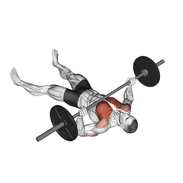

中级平均重量
一般中级训练者的参考值。
男性
214 lb
女性
111 lb
地板推举平均重量 [1RM]
| 等级 | ||
|---|---|---|
| 初学者 | 84 lb | 34 lb |
| 初级者 | 140 lb | 66 lb |
| 中级者 | 214 lb | 111 lb |
| 进阶者 | 303 lb | 167 lb |
| 菁英 | 403 lb | 232 lb |
注：这些标准是以一般训练者的 1RM 为基准估算。体重、年龄等个人因素都可能造成差异。详细数据请参考下方表格。
地板推举力量标准(lb)
男性按体重(lb)数据 [1RM]
| 体重 | 初学者 | 初级者 | 中级者 | 进阶者 | 菁英 |
|---|---|---|---|---|---|
| 110 | 35 | 69 | 116 | 176 | 244 |
| 120 | 44 | 81 | 132 | 195 | 266 |
| 130 | 53 | 93 | 147 | 213 | 288 |
| 140 | 62 | 104 | 161 | 230 | 308 |
| 150 | 71 | 116 | 176 | 247 | 328 |
| 160 | 79 | 127 | 189 | 264 | 346 |
| 170 | 88 | 138 | 203 | 280 | 365 |
| 180 | 97 | 149 | 216 | 295 | 382 |
| 190 | 106 | 160 | 229 | 310 | 399 |
| 200 | 114 | 171 | 242 | 325 | 416 |
| 210 | 123 | 181 | 254 | 339 | 432 |
| 220 | 131 | 191 | 266 | 353 | 448 |
| 230 | 140 | 201 | 278 | 366 | 463 |
| 240 | 148 | 211 | 289 | 380 | 477 |
| 250 | 156 | 220 | 300 | 392 | 492 |
| 260 | 164 | 230 | 311 | 405 | 506 |
| 270 | 171 | 239 | 322 | 417 | 519 |
| 280 | 179 | 248 | 332 | 429 | 533 |
| 290 | 187 | 257 | 343 | 441 | 546 |
| 300 | 194 | 266 | 353 | 452 | 558 |
| 310 | 201 | 274 | 363 | 463 | 571 |
男性按年龄数据 [1RM]
| 年龄 | 初学者 | 初级者 | 中级者 | 进阶者 | 菁英 |
|---|---|---|---|---|---|
| 15 | 71 | 119 | 182 | 258 | 344 |
| 20 | 81 | 136 | 208 | 296 | 393 |
| 25 | 84 | 140 | 214 | 303 | 403 |
| 30 | 84 | 140 | 214 | 303 | 403 |
| 35 | 84 | 140 | 214 | 303 | 403 |
| 40 | 84 | 140 | 214 | 303 | 403 |
| 45 | 79 | 132 | 203 | 288 | 383 |
| 50 | 74 | 124 | 190 | 270 | 359 |
| 55 | 69 | 115 | 176 | 250 | 332 |
| 60 | 63 | 105 | 161 | 228 | 303 |
| 65 | 57 | 95 | 145 | 206 | 274 |
| 70 | 51 | 85 | 130 | 185 | 246 |
| 75 | 46 | 76 | 116 | 165 | 220 |
| 80 | 41 | 68 | 104 | 148 | 197 |
| 85 | 37 | 61 | 93 | 132 | 176 |
| 90 | 33 | 55 | 84 | 119 | 159 |
女性按体重(lb)数据 [1RM]
| 体重 | 初学者 | 初级者 | 中级者 | 进阶者 | 菁英 |
|---|---|---|---|---|---|
| 90 | 19 | 44 | 80 | 128 | 183 |
| 100 | 22 | 48 | 86 | 135 | 192 |
| 110 | 25 | 53 | 92 | 142 | 201 |
| 120 | 28 | 57 | 98 | 149 | 209 |
| 130 | 31 | 61 | 103 | 155 | 216 |
| 140 | 34 | 65 | 107 | 161 | 223 |
| 150 | 36 | 68 | 112 | 167 | 230 |
| 160 | 39 | 72 | 117 | 172 | 236 |
| 170 | 41 | 75 | 121 | 178 | 242 |
| 180 | 44 | 78 | 125 | 182 | 248 |
| 190 | 46 | 81 | 129 | 187 | 253 |
| 200 | 48 | 84 | 132 | 192 | 258 |
| 210 | 50 | 87 | 136 | 196 | 263 |
| 220 | 52 | 90 | 139 | 200 | 268 |
| 230 | 55 | 92 | 143 | 204 | 273 |
| 240 | 57 | 95 | 146 | 208 | 277 |
| 250 | 59 | 98 | 149 | 212 | 282 |
| 260 | 61 | 100 | 152 | 215 | 286 |
女性按年龄数据 [1RM]
| 年龄 | 初学者 | 初级者 | 中级者 | 进阶者 | 菁英 |
|---|---|---|---|---|---|
| 15 | 29 | 56 | 94 | 143 | 198 |
| 20 | 33 | 64 | 108 | 163 | 226 |
| 25 | 34 | 66 | 111 | 167 | 232 |
| 30 | 34 | 66 | 111 | 167 | 232 |
| 35 | 34 | 66 | 111 | 167 | 232 |
| 40 | 34 | 66 | 111 | 167 | 232 |
| 45 | 32 | 63 | 105 | 159 | 220 |
| 50 | 30 | 59 | 99 | 149 | 207 |
| 55 | 28 | 54 | 91 | 138 | 191 |
| 60 | 26 | 50 | 83 | 126 | 174 |
| 65 | 23 | 45 | 75 | 114 | 158 |
| 70 | 21 | 40 | 68 | 102 | 141 |
| 75 | 19 | 36 | 60 | 91 | 126 |
| 80 | 17 | 32 | 54 | 82 | 113 |
| 85 | 15 | 29 | 48 | 73 | 101 |
| 90 | 13 | 26 | 44 | 66 | 91 |
注：一般健身房的标准杠铃通常为44 lb。
用 Shiba App 记录与分析
集中查看重量、次数与进步变化。
表格说明
| 等级 | 说明 | 分布 |
|---|---|---|
| 初学者 | 掌握正确动作，并持续训练至少 1 个月。 | 后 5% |
| 初级者 | 持续规律训练至少 6 个月。 | 前 80% |
| 中级者 | 持续规律训练至少 2 年。 | 前 50% |
| 进阶者 | 持续规律训练超过 5 年。 | 前 20% |
| 菁英 | 针对该动作专项训练超过 5 年。 | 前 5% |